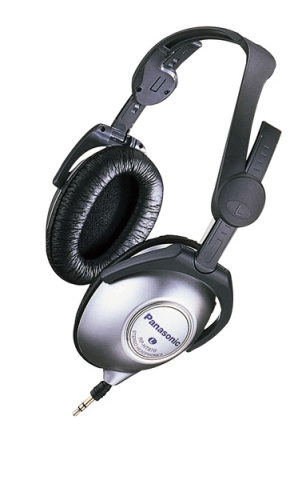

RP-HT870

■価格 6,500円■型式 ダイナミック型密閉式■振動板 38�o■インピーダンス 35Ω■再生周波数帯域 7-28,000Hz ■許容入力 1,000mW■感度 105dB/1mW■コード 1.2m ステレオミニプラグ■重量 150g（コード含む）■発売 1999年3月■販売終了 ■備考 折り畳み式、キャリングポーチ付属コード巻き取り機能装備、0から1.2mの間で3cm単位で巻き取り可能
パナソニックのインデックスへ